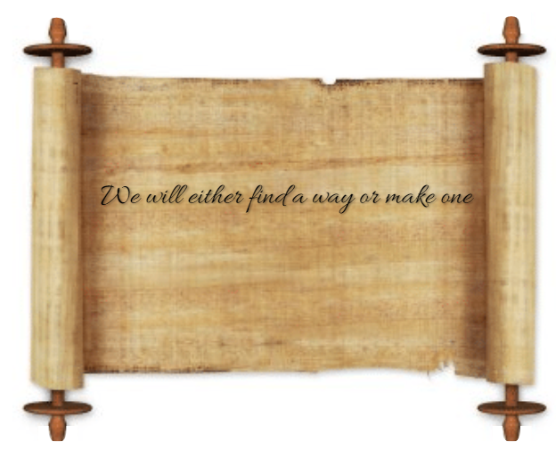

About the Institution

Shri.K.Santhanam
Founder Secretary

If Columbus had not discovered America, someoneelse would have done it sooner or later. If Vascodagama had not rounded the Cape of Good Hope and found a sea route to India, some other sailor would have done it. But if Shakespeare had not been born, no one could have written `Hamlet'. If Kalidasa had not been born, no one would have produced `Sakuntala'. Similarly if Santhanam had not been born no one would have founded Saranathan College of Engineering or Shrimati Indira Gandhi College. The campus of the Engineering College would have been a vast tract of open space with free vegetation and the campus of Shrimati Indira Gandhi College would have remained a stretch of undulated terrain with dilapidated buildings.
He was the President of several organizations, one of them being the Agriculturists' Association. In that capacity, he had led many agitations with success. In fact there was no agitation in which he did not participate for the sake of public good.
He was a gifted speaker with a sense of humour. He required no time or preparation for his speech. In fact he was an expert at making impromptu speeches on any subject and on any occasion. His speeches always kept the audience in good humour. They were always eager to listen and never felt bored.
Just imagine a Trichy without these two colleges and the massive and lovely Blocks of Buildings they contain! The setting up and nurturing of these institutions is precisely the contribution of Santhanam to the world of Education. Long after his earthly existence ceases to be these institutions will live and proclaim his greatness.
Santhanam was a multifaceted personality but primarily an educationist. While Principal Saranathan was associated with National College as Professor and Principal only for 28 years(1919 to 1947) and the great Sir T.Desikachariar as President / Secretary for 33 years (1907 to 1940), Santhanam had been associated with the National College and the School for 70 years, right from 1937 to 2007, from his 7th to the 77th year, as student, as part-time professor and as Secretary.
Quantitatively he had been the uncontested Secretary of the National College Council for 30 years, having been reelected 9 times, his latest reelection being on the 28th September 2002.Qualitatively too he stands out unparalleled as an Educational Administrator and has attempted things unattempted by his predecessors.
His contribution to National College in the introduction of new courses, buildings and infrastructure is immense. He retrieved the situation when the college was in the red. He put up the imposing Arts Block and the Saranathan Block in the National College and the majestic Centenary Block and the Saranathan Block in the National College Higher Secondary School and similar Blocks in the SM Higher Secondary School .
The multi - storeyed Blocks in the Shrimati Indira Gandhi College make it an educational Taj Mahal. So do the Blocks in Saranathan College of Engineering and in Mahatma Gandhi Centenary Vidyalaya. What he said often about the VIPS, invited to lay the foundation stone or inaugurate new courses or buildings having the Midas touch, was true of himself. More than the VIPS he had it in abundance. He touched nothing, which he did not adorn. Every institution he founded registered rapid expansion and progress.
He had celebrated a number of functions in all his institutions with eclat such as the Golden Jubilee, the Diamond Jubilee and the Platinum Jubilee of National College, the Silver Jubilee of MGCV, the Golden Jubilee of S.M.Hr.Sec. School, the Centenary of NCHSS, the Decennium and Bi - Decennium of SIGC, the Decennium of SJMHSS, the Birth Centenaries of Principal Saranathan and Prof.Varadhachariar and installed the statues of the Founders and of Indira Gandhi in the old campus and the bust of Saranathan in National College.He had invited for these functions VIPS ranging from the President of India down to the local Councillor including Ministers, High Court Judges, Commissioners of Income Tax, Vice - Chancellors and eminent educationists; A marvellous record of achievements indeed!
He always advised the boys to aim at becoming No 1 in whatever occupation they chose and was never tired of advising parents to educate their daughters at least upto the post graduate level to enable them to stand on their own legs before thinking of their marriage.
He gave away large sums of money by way of donations to Institutions and scholarships to students from his Trusts and utilized even the purse presented to him at the celebration of the Silver Jubilee of his Secretaryship for the setting up of a new Trust and an Endowment at the Bharathidasan University for the award of a gold medal every year. He donated Rs. Ten Lakhs for the construction of the main block named after him in the Saranathan College of Engineering.
He was a true Shishya of the Kanchi Mutt and had great devotion to the Paramacharya. He contributed liberally to religious causes and the Annadanam Scheme in many temples and played the leading role in the Kumbabishekam of the Jumbukeshwarar temple at Tiruvanaikoil. He never began anything without seeking the blessings of the Paramacharya and never failed in anything he began.
He was a staunch worshipper of Lord Vinayaka. He had put up a small temple for Vinayaka in every one of his Institutions. His evening walks were directed either to Manikka Vinayakar Temple or to Ram Narasu's Pillayar Koil.
One can go on enumerating his other virtues like Guru Bhakthi, rapport with VIPS, comaraderie with colleagues, foresight, resourcefulness, planning, unerring judgment, hospitality, generous appreciation of work done by others, spirit of nationalism, versatility, photographic memory and ever so many similar traits. Suffice it to conclude (with a slight modification of the words of Shakespeare) with the words